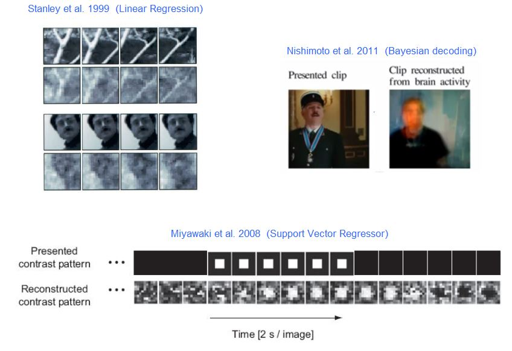
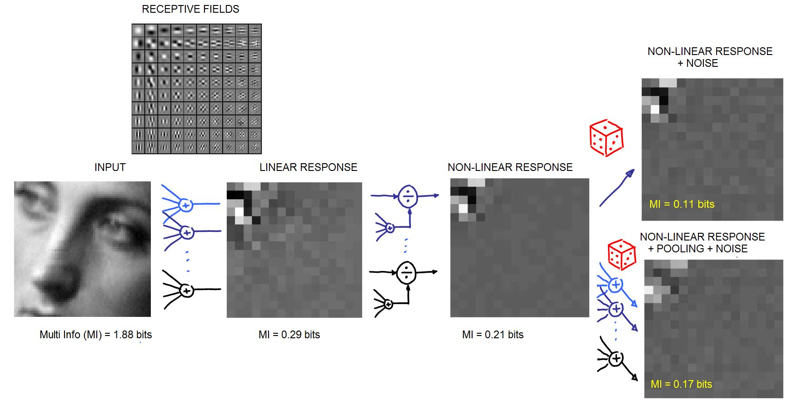
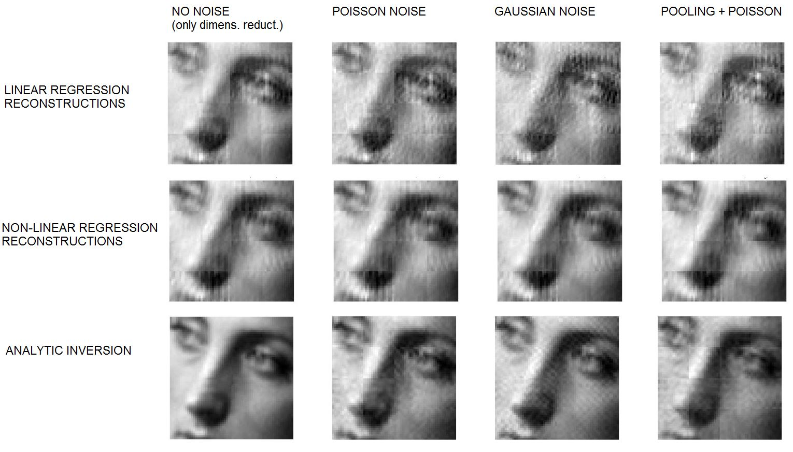

New Compressive Sensing Algorithms from Natural and Artificial Brain Networks
L.M. Martínez and J. Malo
Project Proposal BFU2014-58776

Analytic and Numeric Inversion of Neural Representations: Matlab Toolbox

Methods related to the Human Camera. Let the brain do image coding for you: it is better than JPEG2000
The long term Human
Camera goal could be seen as a new Brain Machine Interface (BMI)
for image
transmission in
which the nontrivial feature extraction and dimensionality reduction
stage is done by a human brain instead
of by the conventional compression algorithm. The (input) signal should
be reconstructed (from the neural signal) at the receiver.
Here we present an oversimplified, but illustrative, example of the decoding of the cortical signal to show some of the computational issues of the modeling and BMI problems, its relations with image compression and enhancement, and to show that we already are working with the technologies that allow the inference of the stimulus from the neural response. The tools mainly include (i) linear and kernel regression techniques used in BMI in (Stanley et al. 1999) and (Miyawaki et al. 2008) respectively, which we used in (Gomez et al. 2005, Camps et al. 2008, Laparra et al 2014b); (ii) Bayesian decoding and inference, used in (M, Nishimoto et al. 2011, and Martinez et al. 2014), which we also used in (Jiménez et al. 2014); and (iii) analytic inversion of nonlinear neural models, whose mathematical properties were explored in (Malo et al. 2006b), and applied in image compression afterwards (Camps et al. 2008, Malo et al. 2008). Moreover, we analyze the coding efficiency using accurate estimates of multi-information (Laparra et al. 2011). |
|
Current state-of-the-art in reconstruction from neural recordings  |
|
Simplified (Forward) Model to start playing with
The considered example uses (i) a nonlinear
response based on divisive normalization and fitted with psychophysics
(Carandini et al. 2012, Malo et al. 2006, Malo et al. 2010), (ii) different distortion sources that
modify the nonlinear
signal as for instance, random neural noise or additional pooling
stages not
considered in the assumed model, (iii) dimensionality reduction, i.e.
missing
responses in the recorded signal.
Of course, this model will be augmented in
different ways (e.g. including irregular spatial sampling, the
diversity in
shapes of the receptive fields (Martinez et al. 2014), the adaptive
interaction in the
nonlinear stage (Schwartz et al. 2009), or correlated noise patterns.
 Multi information numbers (in bits) between four coefficients of the different representation show the redundancy reduction along the path, which is consistent with the efficient encoding hypothesis [Olshausen96, Schwartz01], and is consistent with our previous results [Malo06b, Malo10]. Reconstructions
from the (stochastic) responses of the (partially or totally) unknown
model
Next figure
shows the reconstruction using different
inversion techniques: linear (similar to [stanley99]), Kernel (similar
to [Miyawaki08]),
and
analytic, as in [Malo06b].
The example explores the effect of different distortion sources (noise
and
elements not considered in the model) on top of a representation of
reduced
dimensionality (we are missing 61% of the neurons -those tuned to high
frequencies-). The good properties of analytic inversion could be used
to
complement (as prior knowledge) the current regression techniques.
 Estimated stimuli from the neural signal under different distortion sources (dimensionality reduction, different neural noise and additional pooling stages not considered in the forward model). In this numerical experiment linear reconstruction is more sensitive to distortion, which is alleviated by nonlinear regression, which still displays significant artifacts. The analytical inverse seems to reconstruct better but also amplifies the noise. The knowledge extracted from the structure of the inverse should be included in the conventional methods. |
|
Related Papers [Camps08], Camps, G., Gómez, G., Gutiérrez, J., Malo, J. On the Suitable Domain for SVM Training in Image Coding. J. Mach. Learn. Res. Vol. 9: 49-66 (2008)
[Gomez05] Gómez G., Camps, G., J. Gutiérrez, J. Malo. Perceptual Adaptive Insensitivity for SVM Image Coding. IEEE Trans.Neur. Nets, 16(6): 1574-1581, ( 2005)
[Horikawa13] T. Horikawa, M. Tamaki, Y. Miyawaki, Y. Kamitani. Neural Decoding of Visual Imagery During Sleep Science 340, 639-642 (2013);
[Laparra10a], V. Laparra, J. Muñoz, J. Malo. "Divisive Normalization Image Quality Metric Revisited" J. Opt. Soc. Am. A. 27(4): 852-864, (2010)
[Laparra11] V. Laparra, G. Camps-Valls, J. Malo " Iterative Gaussianization: From ICA to Random Rotations ," IEEE Trans. on Neural Network, vol. 22, no. 4, pp. 537 - 549 , Apr 2011
[Malo06b] J. Malo, I.Epifanio, R. Navarro & E. Simoncelli, Non-linear Image Representation for Efficient Perceptual Coding. IEEE Trans. Im. Proc., 15 (1):68-80, (2006).
[Malo08] J. Malo, J. Gutiérrez, G. Camps, M.J. Luque. “Method, apparatus and software for color image compression based on non-linear perceptual representations and machine learning”. Ref. P200801943 Oficina Española de Patentes y Marcas. 20 de junio de 2008.
[Malo10]
J.
Malo
and V. Laparra. "Psychopysically Tuned
Divisive Normalization approximately Factorizes the PDF of Natural
Images". Neural Computation. 22(12): 3179-3206 (2010)
[Nishimoto11] S. Nishimoto, A.T. Vu, T. Naselaris, Y. Benjamini, B. Yu, J.L. Gallant. "Reconstructing Visual Experiences from Brain Activity Evoked by Natural Movies". Current Biology 21(19): 1641-1646. 2011. https://www.youtube.com/watch?v=FR0qJ17Rsvc
[Olshausen06] Olshausen B. A. and Field D.. Emergence of simple-cell receptive field properties by learning a sparse code for natural images. Nature, 381:607–609, (1996). [Schwartz01] O. Schwartz and E P. Simoncelli, “Natural signal statistics and sensory gain control”. Nature Neuroscience, 4(8):819-825, Aug. (2001).
[Schwartz06], O., Pillow, J.W., Rust, N.C., and Simoncelli, E.P. (2006). Spike-triggered neural characterization. J. Vis. 6, 484–507.
[Stanley99] Stanley, GB; Li, FF; Dan, Y (1999). "Reconstruction of natural scenes from ensemble responses in the lateral geniculate nucleus". Journal of Neuroscience 19 (18): 8036–42 |
|
Download Code
Specific
code to reproduce the experiments in this illustration |
|